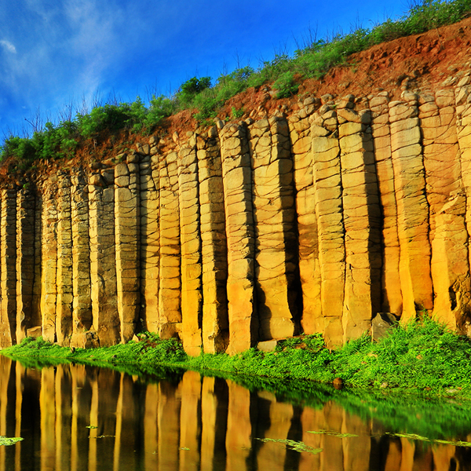

離島匯總
旅遊網站
- 交通部觀光局：
- 政府觀光資訊：
- 旅行圖中 馬祖, 金門 澎湖
- 雄獅旅遊： 離島
- 玩樂網 One Two Smile 離島旅遊 - 方案一覽
- 易遊網 ezTravel 台灣離島旅遊搜尋
- SmarterWay: 2020 台灣離島旅遊推薦 澎湖、馬祖、綠島、小琉球、蘭嶼、金門這樣玩 - 離島旅遊推薦
- KKdays 金門旅遊, 馬祖旅遊, 澎湖旅遊
- Funtime 旅遊比價 2020/06/19：台灣離島總整理
郵輪離島旅遊
- 星夢郵輪 - 探索夢號 郵輪環島 與 跳島
- 太陽公主號
智慧型導遊專屬網站
旅遊網站
郵輪離島旅遊
金門、烈嶼氣候，夜涼晝熱，風化強烈。其氣候受到大陸東南地區和中國沿岸流(寒流)的影響，冬季乾冷、春季多霧。夏季雖有西南氣流和颱風帶來較多的雨水，卻因為強烈蒸發以及島嶼蓄水不佳，此為島上旱作較盛行之主因。因春季多霧而影響飛機起降，使推展觀光遊憩受影響。
近四十餘年來，金門地區基於軍事安全理由，沿海500公尺內禁建，且樓層最高不得超過三層，全區都市化緩慢，故大部分仍維持傳統建築風貌，構成金門本島特殊文化景觀。
金門有豐富的文化資產，閩南、洋樓建築群，風景名勝遍佈全島各地，全縣更有廿一處國家級古蹟、十二處縣定古蹟，加上金門歷經「古寧頭大戰」、「八二三」砲戰等戰役之洗禮，豐富的戰爭遺跡及軍事工事，是觀光旅遊的好地方。
馬祖位於臺灣西北方的臺灣海峽上，行政隸屬連江縣，下轄南竿、北竿、東引、莒光四鄉，還有許多無人島嶼，包括：亮島、高登、大坵、小坵等，形成東西窄、南北狹長的地形，總面積約為29.6平方公里；其中南竿是第一大島，也是馬祖的政經文教中心，南竿鄉面積最大為10.64平方公里、北竿鄉9.30平方公里、莒光鄉5.26平方公里、東引鄉4.40平方公里。馬祖列島因距離中國大陸福建的閩江口僅15公里，過去即被譽為上天灑在閩江口的一串珍珠。
1949年，國民政府遷臺，東海部隊轉進馬祖列島，1956年7月成立「馬祖戰地政務委員會」，馬祖地區被劃入行政督導區，實施軍政一元化治理，自此馬祖全區進入30餘年之軍事管制時期，隨處可見結構複雜的軍事建築、地下坑道及港口、據點、砲座、訓練場所、軍醫院等軍事設施，爾後金馬成為前線地區，使馬祖增添許多軍事色彩。
馬祖地區屬亞熱帶海洋性氣候，受季風、洋流及地理位置影響，有分明的四季天氣，冬冷潮濕，春夏多霧，秋天則是一般穩定天候。馬祖的緯度稍微高於台灣北部，但因靠近大陸型氣候，氣溫比台北低，年平均溫度為攝氏18.6度，早晚溫差大，每年氣溫12月到2月之間最低，2月份均溫僅10度左右，7、8月氣溫最高，月平均溫度在29度左右。
澎湖群島因為板塊運動效應造成地殼產生裂隙，高壓、高熱的岩漿從裂隙中溢流噴出，而熾熱的熔岩流在海水與空氣的冷凝作用下，逐漸冷卻凝固，另經數次的地盤沈降升浮後，而形成澎湖群島特殊的地形。
由於熔岩流在冷卻過程的營力、均質程度等主客觀因素影響，凝固的玄武岩自然生成多邊型的柱狀節理和板狀節理等自然奇景。其中又以南海遊憩系統的桶盤嶼巍峨高聳玄武岩石柱群最具代表性；東北海的雞善嶼、錠鉤嶼和小白沙嶼等三座島嶼玄武岩景觀則已列為玄武岩自然保留區。

澎湖地區鳥類的移徙，在每年春季1到4月最頻繁，候鳥的種類和數量是全年最高峰，5月份開始，候鳥數量與種類漸漸減少。雖然夏季6、7月間，候鳥種類最少，不過到澎湖棲息繁殖的東候鳥燕鷗卻成為澎湖鳥類生態的特色，同時也是賞鳥活動最佳的模特兒。9月至12月的秋冬兩季則是候鳥向南遷徙準備度冬的時節，因此，仍有不少種類和數量甚多的紅尾伯勞、藍磯鶇、大白鷺、小水鴨、磯鷸等過境鳥和冬候鳥出現。
92年澎湖的鳥類調查數據已達到14目40科317種。這些鳥類除澎湖本島各地常見的鷸科、行鳥科、鷺科、雁鴨科等水鳥外，夏季的燕鷗仍是愛鳥人士的最愛。澎湖夏季最常見的燕鷗計有，玄燕鷗、蒼燕鷗、紅燕鷗、白眉燕鷗、小燕鷗和鳳頭燕鷗等六種。
此外，澎湖的麻雀和小雲雀這兩種留鳥，是澎湖最普遍且數量最多的鳥類，鳥種與臺灣所產略有不同，分屬於不同的亞種。其中，俗稱「半天鳥」的澎湖小雲雀更被推薦為澎湖的縣鳥。
至於珊瑚淺坪中的珊瑚族群，因生長環境佳，覆蓋海床面積相當大，是海洋底層食物鏈，所以珊瑚淺坪生態系最豐富。澎湖海域的珊瑚，包括石珊瑚類之軸孔珊瑚、盤珊瑚、角星珊瑚及鹿角珊瑚等，柳珊瑚類之海扇、海樹等及軟珊瑚類等各種珊瑚，造型各自不同，十分可觀。另外海藻資源相當豐富，常見有綠藻、褐藻、紅藻等藻類，澎湖海域約有四十餘種，具有經濟價值的有紫菜、海菜、石花菜和髮菜。
在潮間帶礁岩上常見到如蜑螺、笠螺、鐘螺、蠑螺、玉黍螺、寶螺、石鱉、黑齒牡蠣等貝類；螃蟹、龍蝦、寄居蟹、瓷蟹等節肢動物；還有讓遊客驚聲尖叫的海參、海星和陽燧足等棘皮動物。另外澎湖擁有數量最多的「石滬」 ，這種早期用來作為捕魚陷阱設施，是澎湖潮間帶休閒漁業體驗活動的項目之一。